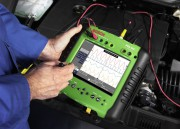

 Поломка автомобиля? Открыли капот, но не смогли обнаружить причину самостоятельно? В этом случае требуется диагностика авто. Современная процедура, не требующая затрат времени и точно определяющая корень случившихся неполадок.
Зачем терять время на поиски неисправностей? Обратиться к нам лучше, чем копаться в механизмах и отчаиваться, что ничего не получается. За несколько часов мы без труда решим все проблемы!
диагностику двигателя
диагностику КПП
диагностику подвески
диагностику тормозной системы
диагностику системы впрыска
диагностику системы охлаждения
диагностику блока управления
диагностику электронной системы
диагностику системы кондиционирования
диагностику выхлопной системы
Мы работаем с автомобилями любых марок и производителей. Современные методы и оборудование позволяют выполнять сервис на высшем уровне. Мы не предлагаем клиентам замену всех узлов, которые могут быть неисправными. Принцип «поменяем, поглядим, может станет лучше» - не про нас. Грамотные мастера осуществляют тщательный поиск неисправных узлов и предлагают конкретные решения проблем. При необходимости мы произведем комплексный ремонт двигателей.
Став клиентом нашего автосервиса, Вы не просто сэкономите деньги. У нас квалифицированная помощь, как при диагностике автомобиля, так и в решении многих вопросах его обслуживания. Мы не позволим поломкам влиять на Вашу способность перемещаться в пространстве и радоваться жизни!